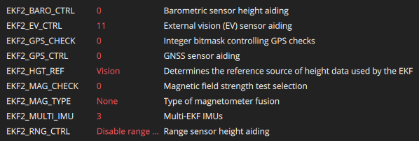

Quadrotor Flight with ROS2 and PX4 - Guide
This page describes how to fly a quadrotor using a motion capture (MOCAP) system. Instructions on how to fly a quadrotor using PX4 in offboard mode through QGroundControl and ROS2.
MOCAP Set-up
Basic overview:
- Create an asset
- Track and publish data via VRPN
- Start VRPN client node
- Subscribe to data on ROS2 topic
Create an Asset
See Leon's Tutorial for a detailed walk-through.
Publish MOCAP Data
See Leon's Tutorial for a detailed walk-through.
Note that you only need to enable the VRPN option. NatNet streaming enabled is not required.
Receive MOCAP Data
See Leon's Tutorial for a detailed walk-through.
The data of the asset (position and quaternion) will be published to a ROS2 topic.
Install vrpn-mocap package
Run the mocap node. The server number is something like 192.168.1.191
ros2 launch vrpn_mocap client.launch.yaml server:=<server number> port:=3883
# Or try this
ros2 run vrpn_client_ros vrpn_client_node
Check mocap data being published. You must be connected to MAGICC wifi!
Check frequency of messages
Resources
PX4 Offboard Mode
To fly autonomously via ROS2 commands, the vehicle must be in offboard mode. This requires configuration of PX4 parameters as described below as well as a constant proof of life signal being published from the ROS2 controller program.
PX4 Parameters
EKF2_BARO_CTRL: 0EKF2_EV_CTRL: 11EKF2_GPS_CHECK: 0EKF2_GPS_CTRL: 0EKF2_EV_DELAY: 0.0msEKF2_HGT_REF: VisionEKF2_MAG_CHECK: 0EKF2_MAG_TYPE: NoneEKF2_MULTI_IMU: 3EKF2_RNG_CTRL: Disable range fusion

Parameters set using QGroundControl
Resources
- PX4 Guide - EKF2 Tuning/Configuration
- AREAL Hardware Standup Guide - PX4 Parameters for VICON Camera Feedback
- Github issue - Vicon Position Tracking w/ ROS2
- Github issue - Flying in position mode with Optitrack motion capture is unstable
Helpful Commands for Debugging
Quick Reference
Start VRPN Client
Login to Jetson
Launch QGC
Clone px4_msgs package
ROS2 Commands
Check the published mocap data
Check the position data passed to PX4
Check odometry data published by EKF2
Rebuild the mocap_px4_bridge package
colcon build --packages-select mocap_px4_bridge
source install/setup.bash
ros2 run mocap_px4_bridge mocap_px4_bridge
Playback saved mocap data from a rosbag
PX4 Console Debugging
This is in the MAVLink Console
# Check flight status
commander status
# See the recent data received on any PX4 topic
listener vehicle_visual_odometry
listener vehicle_status
listener vehicle_odometry
listener estimator_status
listener vehicle_local_position
# Manage ekf2
ekf2 stop
ekf2 start
ekf2 status
# Check PX4's internal time
uorb top -1 vehicle_visual_odometry
# Other checks
listener estimator_innovations
listener estimator_innovation_variances
listener estimator_status_flags
listener sensor_combined
commander check